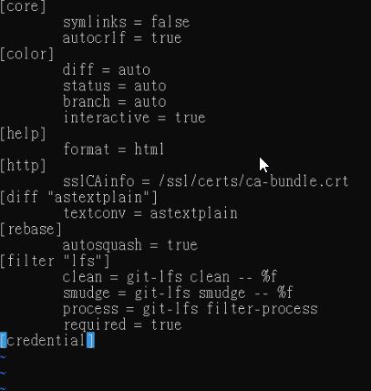

倉儲 <<
Previous Next >> 倉儲改版
倉儲建立
進入github-點右方選項建立新的倉儲，(倉儲姓名及設定好之後即可建立)
initialize this repository with a README 記得打勾


打開倉儲後打開設置並滑到Github pages

將選項改至master branch

啟用後GitHub Pages預設會伺服根目錄下的index.html
輸入git config --edit --system，即可進入下方圖面的頁面-將 credential 項目中的 helper = manager 刪除後儲存(wq)

之後 git clone(cd進入倉儲資料夾之後，輸入 git clone git@github.com/50733115/倉儲名.git，即可clone自己的倉儲，另外需老師倉儲內容，所以也必須將https://github.com/chiamingyen/cmsimfly.git clone進來
隨後將老師倉儲的檔案複製到自己新的倉儲檔案裏面來不過.git和README.me檔案不用拉
git config --global user.name“50733115”
git config --global user.eamil“50733115@gm.nfu.edu.tw”
git config --global http.proxy http://140.130.17.3:3128
git add .
git commit -m""
git push
倉儲 <<
Previous Next >> 倉儲改版